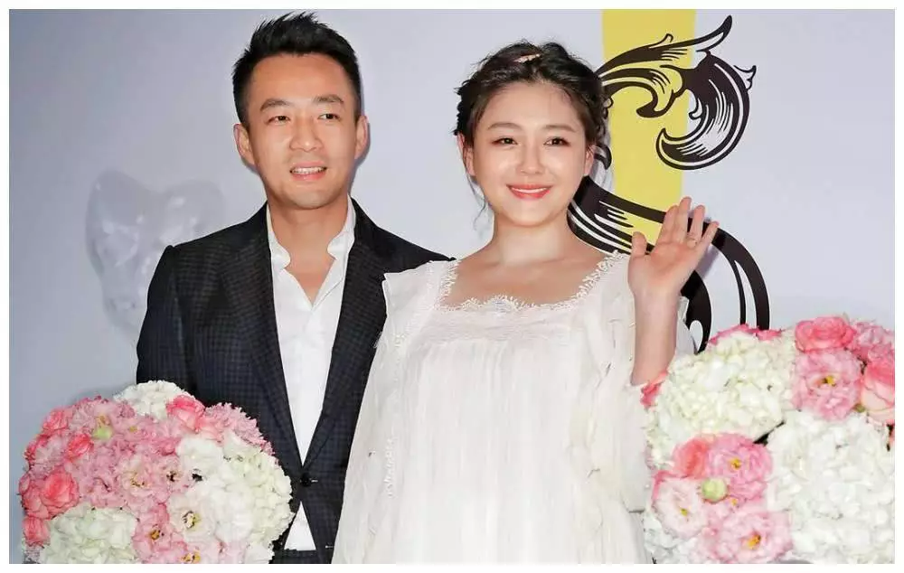
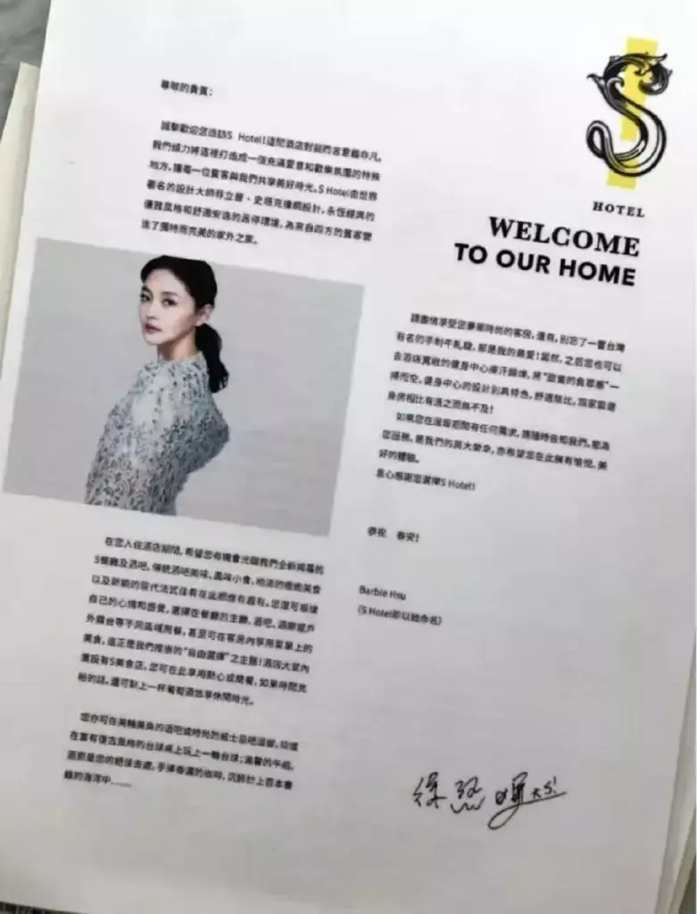
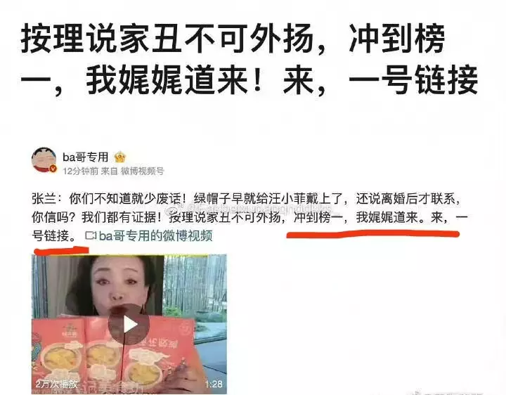

大S这碗软饭，汪小菲吃不动
原创 V姐万事屋 V姐来了 2022-11-22 21:04 发表于上海 原文链接(长) 原文链接(短)Hi，我是V姐。
这两天市场倒是乏善可陈，跟着疫情和高层喊话来回震荡。
昨天证监会主席说要“建立探索中国特色的估值体系”，今天中字头股票都大涨。
昨天旅游餐饮消费相关下挫，新冠检测股倒是反弹了。
准确说，上上下下不是跟疫情有关，是跟核心城市疫情有关。
能够影响大盘的城市，今年的事实证明只有京沪。
兰州，呼和浩特，新疆，云南，成都，重庆，石家庄，天津，西安等等，都没有能力影响大盘，甚至广州也没有。
不是说其他城市不重要，只从资本市场反应来讨论。大家看，市场中断这波反弹行情，资金从价值股再度切换回成长，因为核心城市之一确诊过千了，274例新增本土中，207例社会面新增。
核心城市的政策又收紧了，现在处于松松紧紧去压平曲线的阶段，大的转向近期应该没戏了。
股市既然也没啥好说的，来吃个瓜吧，本情感博主上线了。
汪小菲跟大S撕得满城风雨，大家看了吗？
我简单总结一下，汪小菲不付离婚协议里规定好的费用，被大S告上法庭，于是小菲开始了他的表演：
**1、骂大S现任光头老公住在自己买的豪宅里，连床垫都不换，自己不想给他付电费了。**
**2、骂小S嗑药，非法拿管制药物，老公坚持乱搞20年。**
**3、骂大S不肯带孩子回北京，害得他和张兰女士看不到娃。**
大家看上面三条，第一条是传播最广的，因为实在过于搞笑。
但是汪小菲集中火力爆料的，其实是第2条。
我数了下，他连发9条微博，喷小S违法获取和服食管制药物，以及详细爆料了她老公许雅钧在台北上海出轨的破事儿。
这里就很有意思了，他跟大S撕逼，骂对方现任老公吃软饭我能理解，为啥要盯着小S骂呢？
我仔细看了下汪小菲连发的25条微博，以及他在底下跟网友的众多互动，总算搞明白了这个逻辑：
_小S，你自己也是女明星，有钱有能力，可是老公20年如一日泡夜店，找辣妹，甚至在上海小S买的房子里进行多人运动，你都能忍。_
_但是你却撺掇你姐离婚。_
_我干嘛了？_
_不就也泡泡妞吗？_
_跟你老公能比吗？_
_你都快被逼得神经不正常，天天靠服药调节了，你这个女德天花板，怎么双标对待你姐呢？_
_不应该劝劝她好好过日子吗？_
_毕竟我可是正黄旗，爱新觉罗后裔，贵族血统，牛逼格拉斯的北京孩子呢。_
总之我跟大S离婚，你小S没少从中使坏，所以现在我先喷为敬。
好了，破案了，所以看到最后，小菲，你就是还放不下大S嘛。
那么问题来了，为啥放不下呢？明明现在也有美艳女友呀。
很简单，因为汪小菲是个软饭硬吃的人，离开大S，再也找不到这么好的饭碗了。
夫妻的恩怨，看上去是情感是非道德，底层离不开经济原因。
前者说不清，后者不要太清爽。
小菲哥结婚时，家里的俏江南风头正劲，一年营收10亿，妈妈是女强人，老婆是女明星，简直人生赢家。
于是呢，老婆也乖乖住北京，积极备孕生娃，堪称恩爱夫妻。

12年俏江南对赌协议失败，母子失去俏江南控制权，从此我脑海里就一直有一个疑问挥之不去：
**小菲哥，你到底赚钱吗？**
13年，他创立了一个叫做合润麟的食品公司卖饮料：
代言人推广费都省了，直接让老婆上，难怪叫私家茶。
15年，他又开了一个置业公司。
当年公布的资产状况我差点以为看错了，净利润10块？
16年呢，他又开了个公司，不得不说，小菲哥真是标准的连续创业者。
这年他开始进军酒店行业，17年在台北开出S HOTEL，酒店里都是大S的照片，小菲营销的通稿都是爱妻酒店。

大家也知道，疫情后酒店行业难做，21年年初，就爆出大S卖出台北的2套豪宅给酒店续现金流。
接下来呢，小菲哥又跟妈妈一起，进军老本行餐饮行业，卖起了酸辣粉。
昨天小菲在热搜挂了一天，妈妈趁热打铁，老铁们，1号链接，听我娓娓道来。

流量就是钱，这次小菲肯定是赚钱了。
梳理完小菲的商业帝国，大家发现了吗？
这些个公司看上去是汪小菲在经营，董事长头衔炫到飞起，但实际上都是捆绑大S的名气进行营销的。
说实话，没有大S，又有多少人认识张兰和汪小菲呢？直播间卖货的流量又哪里会这么大呢？
所以小菲每天牛逼轰轰，觉得自己养老婆，养孩子，出手大方，爷们认证，属实天大的误会。
这在大S看来，分明是软饭硬吃。
老娘帮你带货，帮你营销，出钱出力，生儿育女差点被送走，还要忍受你人五人六，婚内出轨？
可拉倒吧，一拍两散。
**小菲所谓抚养费也好，房贷也好，电费也好，在大S眼里，不过是对方利用自己名气变现，应该付的分红而已。**
分红打给我就是我的，你管我给谁花呢？
何况白纸黑字合同在那，签了又后悔，只能说明脑子确实不太好。40多了，发起疯来自称北京孩子，巨蟹座就是这样，我崩溃啦，属实适合找妈妈抱抱，不适合做生意 具俊晔至少情绪稳定，性格温柔，事事依着大S。
爱你就来台北住你的豪宅，绝不会指责大S不去韩国定居。
论男权，韩国怎么也是佼佼者吧？
但是光头就能大大方方说：
给S的见面礼物是一个热吻；
给S孩子的礼物，是自己不要的裤子，改成了包包；
给S的订婚戒指，是纹在手上的纹身。
对着镜头哭喊爱大S一辈子，全然对20多年前，自己当红时不公开大S，悄悄分手的事情绝口不提。
结果呢，就是上杂志，接受访问，曝光率激增，住豪宅，出入保姆司机。
这就是软饭正确的打开方式， **我知道我提供的是情绪价值，那我就以此为荣，绝不让庸俗的物质玷污我们的感情。**
小菲之前呢，失误就失误在，明明是靠着对方挣钱，偏偏不肯承认，动不动情绪失控，大喊大叫， **摆出一家之主的气势，去冒犯真正的一家之主。**
现在人财两空，现金流估计也吃紧，只能在全国人民面前闹一出，薅一波流量好卖货。
大S这个人，纵观她的历任知名伴侣，都是女强男弱的。
蓝正龙，周渝民，汪小菲，具俊晔。
这里面蓝正龙和周渝民都是听到她高跟鞋就紧张的，具俊晔不谈了，姿态很低，把S全家哄得服服帖帖。
所以她就是一个喜欢做女王，不介意伴侣吃软饭的人。
不介意名气共享，收益共享，但是介意软饭硬吃。
这么狠的角色，自然能够做到嘴软心硬，命运完全把握在自己手上。
哎，小菲，收手吧，大S这碗软饭，你真的吃不动。
具俊晔至少情绪稳定，性格温柔，事事依着大S。
爱你就来台北住你的豪宅，绝不会指责大S不去韩国定居。
论男权，韩国怎么也是佼佼者吧？
但是光头就能大大方方说：
给S的见面礼物是一个热吻；
给S孩子的礼物，是自己不要的裤子，改成了包包；
给S的订婚戒指，是纹在手上的纹身。
对着镜头哭喊爱大S一辈子，全然对20多年前，自己当红时不公开大S，悄悄分手的事情绝口不提。
结果呢，就是上杂志，接受访问，曝光率激增，住豪宅，出入保姆司机。
这就是软饭正确的打开方式， **我知道我提供的是情绪价值，那我就以此为荣，绝不让庸俗的物质玷污我们的感情。**
小菲之前呢，失误就失误在，明明是靠着对方挣钱，偏偏不肯承认，动不动情绪失控，大喊大叫， **摆出一家之主的气势，去冒犯真正的一家之主。**
现在人财两空，现金流估计也吃紧，只能在全国人民面前闹一出，薅一波流量好卖货。
大S这个人，纵观她的历任知名伴侣，都是女强男弱的。
蓝正龙，周渝民，汪小菲，具俊晔。
这里面蓝正龙和周渝民都是听到她高跟鞋就紧张的，具俊晔不谈了，姿态很低，把S全家哄得服服帖帖。
所以她就是一个喜欢做女王，不介意伴侣吃软饭的人。
不介意名气共享，收益共享，但是介意软饭硬吃。
这么狠的角色，自然能够做到嘴软心硬，命运完全把握在自己手上。
哎，小菲，收手吧，大S这碗软饭，你真的吃不动。
具俊晔至少情绪稳定，性格温柔，事事依着大S。
爱你就来台北住你的豪宅，绝不会指责大S不去韩国定居。
论男权，韩国怎么也是佼佼者吧？
但是光头就能大大方方说：
给S的见面礼物是一个热吻；
给S孩子的礼物，是自己不要的裤子，改成了包包；
给S的订婚戒指，是纹在手上的纹身。
对着镜头哭喊爱大S一辈子，全然对20多年前，自己当红时不公开大S，悄悄分手的事情绝口不提。
结果呢，就是上杂志，接受访问，曝光率激增，住豪宅，出入保姆司机。
这就是软饭正确的打开方式， **我知道我提供的是情绪价值，那我就以此为荣，绝不让庸俗的物质玷污我们的感情。**
小菲之前呢，失误就失误在，明明是靠着对方挣钱，偏偏不肯承认，动不动情绪失控，大喊大叫， **摆出一家之主的气势，去冒犯真正的一家之主。**
现在人财两空，现金流估计也吃紧，只能在全国人民面前闹一出，薅一波流量好卖货。
大S这个人，纵观她的历任知名伴侣，都是女强男弱的。
蓝正龙，周渝民，汪小菲，具俊晔。
这里面蓝正龙和周渝民都是听到她高跟鞋就紧张的，具俊晔不谈了，姿态很低，把S全家哄得服服帖帖。
所以她就是一个喜欢做女王，不介意伴侣吃软饭的人。
不介意名气共享，收益共享，但是介意软饭硬吃。
这么狠的角色，自然能够做到嘴软心硬，命运完全把握在自己手上。
哎，小菲，收手吧，大S这碗软饭，你真的吃不动。